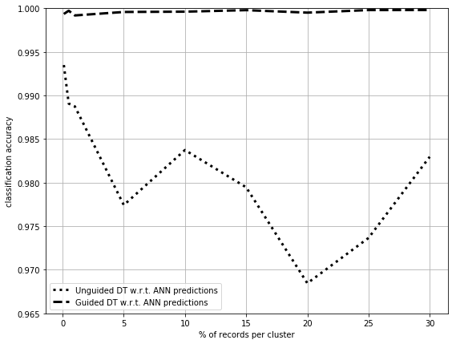

import pandas as pd
import matplotlib.pyplot as plt
import numpy as np
from sklearn.datasets import make_classification
import scipy
%matplotlib inline
activity = pd.read_csv('./datasets/UCI PAMAP2/activity_3_rec.csv',
sep=',')
display(activity.info())
---------------------------------------------------------------------------
ModuleNotFoundError Traceback (most recent call last)
Cell In[1], line 1
----> 1 import pandas as pd
2 import matplotlib.pyplot as plt
3 import numpy as np
ModuleNotFoundError: No module named 'pandas'
display(len(activity))
1942872
to_drop = ['subject', 'timestamp', 'heart_rate']
activity.drop(axis=1, columns=to_drop, inplace=True)
display(activity.head())
| activityID | motion | temp_hand | acceleration_16_x_hand | acceleration_16_y_hand | acceleration_16_z_hand | acceleration_6_x_hand | acceleration_6_y_hand | acceleration_6_z_hand | gyroscope_x_hand | ... | acceleration_16_z_ankle | acceleration_6_x_ankle | acceleration_6_y_ankle | acceleration_6_z_ankle | gyroscope_x_ankle | gyroscope_y_ankle | gyroscope_z_ankle | magnetometer_x_ankle | magnetometer_y_ankle | magnetometer_z_ankle | |
|---|---|---|---|---|---|---|---|---|---|---|---|---|---|---|---|---|---|---|---|---|---|
| 0 | 1 | n | 30.375 | 2.21530 | 8.27915 | 5.58753 | 2.24689 | 8.55387 | 5.77143 | -0.004750 | ... | 0.095156 | 9.63162 | -1.76757 | 0.265761 | 0.002908 | -0.027714 | 0.001752 | -61.1081 | -36.8636 | -58.3696 |
| 1 | 1 | n | 30.375 | 2.29196 | 7.67288 | 5.74467 | 2.27373 | 8.14592 | 5.78739 | -0.171710 | ... | -0.020804 | 9.58649 | -1.75247 | 0.250816 | 0.020882 | 0.000945 | 0.006007 | -60.8916 | -36.3197 | -58.3656 |
| 2 | 1 | n | 30.375 | 2.29090 | 7.14240 | 5.82342 | 2.26966 | 7.66268 | 5.78846 | -0.238241 | ... | -0.059173 | 9.60196 | -1.73721 | 0.356632 | -0.035392 | -0.052422 | -0.004882 | -60.3407 | -35.7842 | -58.6119 |
| 3 | 1 | n | 30.375 | 2.21800 | 7.14365 | 5.89930 | 2.22177 | 7.25535 | 5.88000 | -0.192912 | ... | 0.094385 | 9.58674 | -1.78264 | 0.311453 | -0.032514 | -0.018844 | 0.026950 | -60.7646 | -37.1028 | -57.8799 |
| 4 | 1 | n | 30.375 | 2.30106 | 7.25857 | 6.09259 | 2.20720 | 7.24042 | 5.95555 | -0.069961 | ... | 0.095775 | 9.64677 | -1.75240 | 0.295902 | 0.001351 | -0.048878 | -0.006328 | -60.2040 | -37.1225 | -57.8847 |
5 rows × 41 columns
display(activity.isnull().sum())
activityID 0
motion 0
temp_hand 11124
acceleration_16_x_hand 11124
acceleration_16_y_hand 11124
acceleration_16_z_hand 11124
acceleration_6_x_hand 11124
acceleration_6_y_hand 11124
acceleration_6_z_hand 11124
gyroscope_x_hand 11124
gyroscope_y_hand 11124
gyroscope_z_hand 11124
magnetometer_x_hand 11124
magnetometer_y_hand 11124
magnetometer_z_hand 11124
temp_chest 2420
acceleration_16_x_chest 2420
acceleration_16_y_chest 2420
acceleration_16_z_chest 2420
acceleration_6_x_chest 2420
acceleration_6_y_chest 2420
acceleration_6_z_chest 2420
gyroscope_x_chest 2420
gyroscope_y_chest 2420
gyroscope_z_chest 2420
magnetometer_x_chest 2420
magnetometer_y_chest 2420
magnetometer_z_chest 2420
temp_ankle 8507
acceleration_16_x_ankle 8507
acceleration_16_y_ankle 8507
acceleration_16_z_ankle 8507
acceleration_6_x_ankle 8507
acceleration_6_y_ankle 8507
acceleration_6_z_ankle 8507
gyroscope_x_ankle 8507
gyroscope_y_ankle 8507
gyroscope_z_ankle 8507
magnetometer_x_ankle 8507
magnetometer_y_ankle 8507
magnetometer_z_ankle 8507
dtype: int64
class_label = ['activityID', 'motion']
predictors = [a for a in activity.columns.values if a not in class_label]
for p in predictors:
activity[p].fillna(activity[p].mean(), inplace=True)
display(predictors)
for p in predictors:
activity[p] = (activity[p]-activity[p].min()) / (activity[p].max() - activity[p].min())
activity[p].astype('float32')
display(activity.isnull().sum())
['temp_hand',
'acceleration_16_x_hand',
'acceleration_16_y_hand',
'acceleration_16_z_hand',
'acceleration_6_x_hand',
'acceleration_6_y_hand',
'acceleration_6_z_hand',
'gyroscope_x_hand',
'gyroscope_y_hand',
'gyroscope_z_hand',
'magnetometer_x_hand',
'magnetometer_y_hand',
'magnetometer_z_hand',
'temp_chest',
'acceleration_16_x_chest',
'acceleration_16_y_chest',
'acceleration_16_z_chest',
'acceleration_6_x_chest',
'acceleration_6_y_chest',
'acceleration_6_z_chest',
'gyroscope_x_chest',
'gyroscope_y_chest',
'gyroscope_z_chest',
'magnetometer_x_chest',
'magnetometer_y_chest',
'magnetometer_z_chest',
'temp_ankle',
'acceleration_16_x_ankle',
'acceleration_16_y_ankle',
'acceleration_16_z_ankle',
'acceleration_6_x_ankle',
'acceleration_6_y_ankle',
'acceleration_6_z_ankle',
'gyroscope_x_ankle',
'gyroscope_y_ankle',
'gyroscope_z_ankle',
'magnetometer_x_ankle',
'magnetometer_y_ankle',
'magnetometer_z_ankle']
activityID 0
motion 0
temp_hand 0
acceleration_16_x_hand 0
acceleration_16_y_hand 0
acceleration_16_z_hand 0
acceleration_6_x_hand 0
acceleration_6_y_hand 0
acceleration_6_z_hand 0
gyroscope_x_hand 0
gyroscope_y_hand 0
gyroscope_z_hand 0
magnetometer_x_hand 0
magnetometer_y_hand 0
magnetometer_z_hand 0
temp_chest 0
acceleration_16_x_chest 0
acceleration_16_y_chest 0
acceleration_16_z_chest 0
acceleration_6_x_chest 0
acceleration_6_y_chest 0
acceleration_6_z_chest 0
gyroscope_x_chest 0
gyroscope_y_chest 0
gyroscope_z_chest 0
magnetometer_x_chest 0
magnetometer_y_chest 0
magnetometer_z_chest 0
temp_ankle 0
acceleration_16_x_ankle 0
acceleration_16_y_ankle 0
acceleration_16_z_ankle 0
acceleration_6_x_ankle 0
acceleration_6_y_ankle 0
acceleration_6_z_ankle 0
gyroscope_x_ankle 0
gyroscope_y_ankle 0
gyroscope_z_ankle 0
magnetometer_x_ankle 0
magnetometer_y_ankle 0
magnetometer_z_ankle 0
dtype: int64
X = np.array(activity.drop(axis=1, columns=class_label))
y = np.array(activity['motion'])
y = np.array(list(map(lambda x: 1 if x == 'y' else 0, y)))
display(sum(y))
1136540
from sklearn.model_selection import train_test_split
X_train, X_test, y_train, y_test = train_test_split(X, y, test_size=0.33, random_state=42)
from tqdm import tqdm
def dist(x,y):
return np.linalg.norm(x-y)
#return scipy.spatial.distance.correlation(x,y)
def poprow(arr,i):
pop = arr[i]
new_array = np.vstack((arr[:i],arr[i+1:]))
return new_array,pop
def cluster(X, p, k, dist_to_xr):
#c = [p]
#D = np.column_stack((X,[dist(v[:-1],p[:-1]) for v in X]))
#D = D[D[:,-1].argsort()]
#D = np.delete(D, -1, 1)
#c.extend(D[:k-1])
#D = D[k-1:]
#xc = np.array([p[:-1] for p in c], copy=False, ndmin=2)
#yc = np.array([p[-1] for p in c], copy=False)
#cl = (xc, yc)
#return D, cl
c = [p]
if dist_to_xr == None:
distances = [dist(v[:-1],p[:-1]) for v in X]
else:
distances = dist_to_xr
X = X[np.argpartition(distances, k-1)]
c.extend(X[:k-1])
X = X[k-1:]
xc = np.array([p[:-1] for p in c], copy=False, ndmin=2)
yc = np.array([p[-1] for p in c], copy=False)
cl = (xc, yc)
return X, cl
def mdav(X, y, k):
D = np.column_stack((X,y))
clusters = []
# Test feature. progress bar
pbar = tqdm(total=len(D))
while len(D) >= 3*k:
# Centroid
xm = np.mean(D, axis=0)
# Furthest from centroid
xri = np.argmax([dist(v[:-1],xm[:-1]) for v in D])
D, xr = poprow(D, xri)
# Furthest from furthest from centroid
dist_to_xr = [dist(v[:-1],xr[:-1]) for v in D]
xsi = np.argmax(dist_to_xr)
dist_to_xr = dist_to_xr[:xsi]+dist_to_xr[xsi+1:]
D, xs = poprow(D, xsi)
#cluster of xr
#distance list to xr is already computed to find xs,
#patch to remove a factor of n
D, c = cluster(D, xr, k, dist_to_xr)
clusters.append(c)
# Test feature. progress bar
pbar.update(k)
#cluster of xs
D, c = cluster(D, xs, k, None)
clusters.append(c)
# Test feature. progress bar
pbar.update(k)
if len(D) >= 2*k and len(D) < 3*k:
# Centroid
xm = np.mean(D, axis=0)
# Furthest from centroid
xri = np.argmax([dist(v[:-1],xm[:-1]) for v in D])
D, xr = poprow(D, xri)
#cluster of xr
D, c = cluster(D, xr, k, None)
clusters.append(c)
# Test feature. progress bar
pbar.update(k)
# rest of points
xc = np.array([p[:-1] for p in D[:]], copy=False, ndmin=2)
yc = np.array([p[-1] for p in D[:]], copy=False)
cl = (xc, yc)
clusters.append(cl)
# Test feature. progress bar
pbar.update(len(xc))
else:
# rest of points
xc = np.array([p[:-1] for p in D[:]], copy=False, ndmin=2)
yc = np.array([p[-1] for p in D[:]], copy=False)
cl = (xc, yc)
clusters.append(cl)
# Test feature. progress bar
pbar.update(len(xc))
centroids = np.array([np.mean(c[0],axis=0) for c in clusters], copy=False)
# Test feature. progress bar
pbar.close()
return clusters, centroids
from sklearn import tree
def gen_explanations(clustering, max_depth=-1):
explanations = []
for cluster in clustering:
# Testing with max depth
if max_depth < 1:
exp = tree.DecisionTreeClassifier()
else:
exp = tree.DecisionTreeClassifier(max_depth=max_depth)
exp.fit(cluster[0],cluster[1])
explanations.append(exp)
return explanations
def pre_explanations(explanations, centroids, X):
predictions = []
for sample in X:
#select the closest classifier
exp = explanations[np.argmin([dist(sample,c) for c in centroids])]
exp_pred = exp.predict([sample])
predictions.append(int(exp_pred[0]))
return predictions
def pre_explanations_ext(explanations, centroids, X, T, n):
predictions_first = []
predictions_guided = []
ret_exp = []
ret_cen = []
for sample, truth in zip(X,T):
#select the 3 closest classifiers
mins = np.array([dist(sample,c) for c in centroids]).argsort()[:n]
for m in mins:
exp = explanations[m]
exp_pred = exp.predict([sample])
if(exp_pred[0] == truth):
break
predictions_first.append(int(explanations[mins[0]].predict([sample])[0]))
predictions_guided.append(exp_pred[0])
ret_exp.append(exp)
ret_cen.append(centroids[m])
return predictions_first, predictions_guided, ret_exp, ret_cen
import time
exec_times = []
# Generate clusters for different representativities
representativity = [0.001, 0.005, 0.01, 0.05, 0.1, 0.15, 0.2, 0.25, 0.3]
#representativity = [0.05]
K = [int(len(X_train)*r) for r in representativity]
clusterings = []
centroids_of_clusterings = []
for k in K:
start = time.time()
clustering, centroids = mdav(X_train, y_train, k)
clusterings.append(clustering)
centroids_of_clusterings.append(centroids)
end = time.time()
exec_times.append(end-start)
display(f'Time for k={k}: {end-start} seconds.')
100%|█████████████████████████████████████████████████████████████████████| 1301724/1301724 [2:50:46<00:00, 127.04it/s]
'Time for k=1301: 10246.871928453445 seconds.'
100%|███████████████████████████████████████████████████████████████████████| 1301724/1301724 [31:34<00:00, 687.01it/s]
'Time for k=6508: 1895.0742099285126 seconds.'
100%|██████████████████████████████████████████████████████████████████████| 1301724/1301724 [15:59<00:00, 1357.18it/s]
'Time for k=13017: 959.3634784221649 seconds.'
100%|█████████████████████████████████████████████████████████████████████| 1301724/1301724 [03:22<00:00, 20928.56it/s]
'Time for k=65086: 202.54914212226868 seconds.'
100%|█████████████████████████████████████████████████████████████████████| 1301724/1301724 [01:47<00:00, 21349.97it/s]
'Time for k=130172: 107.76151585578918 seconds.'
100%|█████████████████████████████████████████████████████████████████████| 1301724/1301724 [01:10<00:00, 19536.84it/s]
'Time for k=195258: 71.08472013473511 seconds.'
100%|█████████████████████████████████████████████████████████████████████| 1301724/1301724 [00:57<00:00, 24261.16it/s]
'Time for k=260344: 57.874035358428955 seconds.'
100%|█████████████████████████████████████████████████████████████████████| 1301724/1301724 [00:48<00:00, 25111.41it/s]
'Time for k=325431: 49.13618564605713 seconds.'
100%|█████████████████████████████████████████████████████████████████████| 1301724/1301724 [00:35<00:00, 26766.72it/s]
'Time for k=390517: 36.07036733627319 seconds.'
#there were som nans
for i in range(len(clusterings)):
for j in range(len(clusterings[i])):
clusterings[i][j] = (np.nan_to_num(clusterings[i][j][0]), clusterings[i][j][1])
from tqdm import tqdm
shallow = False
clu_explanations = []
for clustering in tqdm(clusterings):
# Test with shallow trees depht=4
if shallow:
explanations = gen_explanations(clustering, 4)
else:
explanations = gen_explanations(clustering, -1)
clu_explanations.append(explanations)
100%|███████████████████████████████████████████████████████████████████████████████████| 9/9 [12:08<00:00, 112.98s/it]
X_train = np.nan_to_num(X_train)
y_train = np.nan_to_num(y_train)
X_test = np.nan_to_num(X_test)
y_test = np.nan_to_num(y_test)
# Train blackbox model
from sklearn.neural_network import MLPClassifier
blackbox = MLPClassifier(hidden_layer_sizes=(100,100,100), max_iter=500, alpha=0.0001,
solver='sgd', verbose=10, random_state=21,tol=0.000000001)
blackbox.fit(X_train, y_train)
Iteration 1, loss = 0.31084960
Iteration 2, loss = 0.14919491
Iteration 3, loss = 0.09337780
Iteration 4, loss = 0.07111013
Iteration 5, loss = 0.06053635
Iteration 6, loss = 0.05382380
Iteration 7, loss = 0.04864873
Iteration 8, loss = 0.04482344
Iteration 9, loss = 0.04150527
Iteration 10, loss = 0.03857450
Iteration 11, loss = 0.03601902
Iteration 12, loss = 0.03371667
Iteration 13, loss = 0.03157243
Iteration 14, loss = 0.02978300
Iteration 15, loss = 0.02828225
Iteration 16, loss = 0.02704164
Iteration 17, loss = 0.02566488
Iteration 18, loss = 0.02452784
Iteration 19, loss = 0.02363187
Iteration 20, loss = 0.02280014
Iteration 21, loss = 0.02194103
Iteration 22, loss = 0.02110946
Iteration 23, loss = 0.02031833
Iteration 24, loss = 0.01956121
Iteration 25, loss = 0.01897488
Iteration 26, loss = 0.01850355
Iteration 27, loss = 0.01785438
Iteration 28, loss = 0.01709117
Iteration 29, loss = 0.01665754
Iteration 30, loss = 0.01601355
Iteration 31, loss = 0.01564496
Iteration 32, loss = 0.01517348
Iteration 33, loss = 0.01486677
Iteration 34, loss = 0.01451316
Iteration 35, loss = 0.01402916
Iteration 36, loss = 0.01383689
Iteration 37, loss = 0.01350529
Iteration 38, loss = 0.01318761
Iteration 39, loss = 0.01287912
Iteration 40, loss = 0.01272907
Iteration 41, loss = 0.01250179
Iteration 42, loss = 0.01204489
Iteration 43, loss = 0.01173560
Iteration 44, loss = 0.01146697
Iteration 45, loss = 0.01136018
Iteration 46, loss = 0.01113003
Iteration 47, loss = 0.01090475
Iteration 48, loss = 0.01065327
Iteration 49, loss = 0.01053628
Iteration 50, loss = 0.01034430
Iteration 51, loss = 0.01016050
Iteration 52, loss = 0.01000045
Iteration 53, loss = 0.00980059
Iteration 54, loss = 0.00956800
Iteration 55, loss = 0.00948763
Iteration 56, loss = 0.00917815
Iteration 57, loss = 0.00915902
Iteration 58, loss = 0.00889209
Iteration 59, loss = 0.00885662
Iteration 60, loss = 0.00869809
Iteration 61, loss = 0.00871018
Iteration 62, loss = 0.00849790
Iteration 63, loss = 0.00833877
Iteration 64, loss = 0.00824323
Iteration 65, loss = 0.00805939
Iteration 66, loss = 0.00793285
Iteration 67, loss = 0.00788125
Iteration 68, loss = 0.00768666
Iteration 69, loss = 0.00752499
Iteration 70, loss = 0.00752815
Iteration 71, loss = 0.00734610
Iteration 72, loss = 0.00731419
Iteration 73, loss = 0.00716679
Iteration 74, loss = 0.00716834
Iteration 75, loss = 0.00703179
Iteration 76, loss = 0.00686777
Iteration 77, loss = 0.00687470
Iteration 78, loss = 0.00671782
Iteration 79, loss = 0.00658352
Iteration 80, loss = 0.00645896
Iteration 81, loss = 0.00645974
Iteration 82, loss = 0.00628102
Iteration 83, loss = 0.00620739
Iteration 84, loss = 0.00612980
Iteration 85, loss = 0.00610140
Iteration 86, loss = 0.00598677
Iteration 87, loss = 0.00591449
Iteration 88, loss = 0.00600187
Iteration 89, loss = 0.00579734
Iteration 90, loss = 0.00582461
Iteration 91, loss = 0.00560147
Iteration 92, loss = 0.00547334
Iteration 93, loss = 0.00556239
Iteration 94, loss = 0.00551173
Iteration 95, loss = 0.00543524
Iteration 96, loss = 0.00522481
Iteration 97, loss = 0.00523447
Iteration 98, loss = 0.00522606
Iteration 99, loss = 0.00516856
Iteration 100, loss = 0.00501829
Iteration 101, loss = 0.00498093
Iteration 102, loss = 0.00501604
Iteration 103, loss = 0.00489713
Iteration 104, loss = 0.00485628
Iteration 105, loss = 0.00482911
Iteration 106, loss = 0.00481455
Iteration 107, loss = 0.00479769
Iteration 108, loss = 0.00470349
Iteration 109, loss = 0.00461334
Iteration 110, loss = 0.00451591
Iteration 111, loss = 0.00455125
Iteration 112, loss = 0.00451417
Iteration 113, loss = 0.00442140
Iteration 114, loss = 0.00445226
Iteration 115, loss = 0.00427243
Iteration 116, loss = 0.00432847
Iteration 117, loss = 0.00419745
Iteration 118, loss = 0.00418013
Iteration 119, loss = 0.00415056
Iteration 120, loss = 0.00411789
Iteration 121, loss = 0.00411276
Iteration 122, loss = 0.00401035
Iteration 123, loss = 0.00396101
Iteration 124, loss = 0.00401563
Iteration 125, loss = 0.00382039
Iteration 126, loss = 0.00385579
Iteration 127, loss = 0.00385298
Iteration 128, loss = 0.00366805
Iteration 129, loss = 0.00371067
Iteration 130, loss = 0.00367573
Iteration 131, loss = 0.00367448
Iteration 132, loss = 0.00359901
Iteration 133, loss = 0.00361765
Iteration 134, loss = 0.00351984
Iteration 135, loss = 0.00356263
Iteration 136, loss = 0.00353607
Iteration 137, loss = 0.00347843
Iteration 138, loss = 0.00344811
Iteration 139, loss = 0.00349176
Iteration 140, loss = 0.00340368
Iteration 141, loss = 0.00331912
Iteration 142, loss = 0.00332820
Iteration 143, loss = 0.00333919
Iteration 144, loss = 0.00329446
Iteration 145, loss = 0.00331363
Iteration 146, loss = 0.00326531
Iteration 147, loss = 0.00319136
Iteration 148, loss = 0.00324355
Iteration 149, loss = 0.00316880
Iteration 150, loss = 0.00316048
Iteration 151, loss = 0.00311083
Iteration 152, loss = 0.00313983
Iteration 153, loss = 0.00307270
Iteration 154, loss = 0.00309881
Iteration 155, loss = 0.00300312
Iteration 156, loss = 0.00296956
Iteration 157, loss = 0.00291557
Iteration 158, loss = 0.00298153
Iteration 159, loss = 0.00292261
Iteration 160, loss = 0.00295265
Iteration 161, loss = 0.00288919
Iteration 162, loss = 0.00292567
Iteration 163, loss = 0.00288362
Iteration 164, loss = 0.00281807
Iteration 165, loss = 0.00281133
Iteration 166, loss = 0.00272096
Iteration 167, loss = 0.00275648
Iteration 168, loss = 0.00270887
Iteration 169, loss = 0.00273412
Iteration 170, loss = 0.00263876
Iteration 171, loss = 0.00265771
Iteration 172, loss = 0.00271478
Iteration 173, loss = 0.00265880
Iteration 174, loss = 0.00264045
Iteration 175, loss = 0.00267450
Iteration 176, loss = 0.00262617
Iteration 177, loss = 0.00260628
Iteration 178, loss = 0.00258513
Iteration 179, loss = 0.00251609
Iteration 180, loss = 0.00252155
Iteration 181, loss = 0.00253514
Iteration 182, loss = 0.00251927
Iteration 183, loss = 0.00248530
Iteration 184, loss = 0.00246237
Iteration 185, loss = 0.00241585
Iteration 186, loss = 0.00236443
Iteration 187, loss = 0.00241257
Iteration 188, loss = 0.00246247
Iteration 189, loss = 0.00242280
Iteration 190, loss = 0.00232560
Iteration 191, loss = 0.00237526
Iteration 192, loss = 0.00234198
Iteration 193, loss = 0.00233975
Iteration 194, loss = 0.00224951
Iteration 195, loss = 0.00227822
Iteration 196, loss = 0.00226993
Iteration 197, loss = 0.00226618
Iteration 198, loss = 0.00228784
Iteration 199, loss = 0.00225672
Iteration 200, loss = 0.00227393
Iteration 201, loss = 0.00221736
Iteration 202, loss = 0.00221012
Iteration 203, loss = 0.00219303
Iteration 204, loss = 0.00218117
Iteration 205, loss = 0.00219764
Iteration 206, loss = 0.00206843
Iteration 207, loss = 0.00219323
Iteration 208, loss = 0.00211268
Iteration 209, loss = 0.00212933
Iteration 210, loss = 0.00218278
Iteration 211, loss = 0.00215459
Iteration 212, loss = 0.00211686
Iteration 213, loss = 0.00215517
Iteration 214, loss = 0.00210266
Iteration 215, loss = 0.00211054
Iteration 216, loss = 0.00200118
Iteration 217, loss = 0.00203521
Iteration 218, loss = 0.00202128
Iteration 219, loss = 0.00205725
Iteration 220, loss = 0.00201679
Iteration 221, loss = 0.00197899
Iteration 222, loss = 0.00199217
Iteration 223, loss = 0.00201589
Iteration 224, loss = 0.00194423
Iteration 225, loss = 0.00201120
Iteration 226, loss = 0.00192950
Iteration 227, loss = 0.00189282
Iteration 228, loss = 0.00192029
Iteration 229, loss = 0.00192517
Iteration 230, loss = 0.00190564
Iteration 231, loss = 0.00187725
Iteration 232, loss = 0.00185083
Iteration 233, loss = 0.00187281
Iteration 234, loss = 0.00186856
Iteration 235, loss = 0.00186149
Iteration 236, loss = 0.00182179
Iteration 237, loss = 0.00177067
Iteration 238, loss = 0.00181017
Iteration 239, loss = 0.00181351
Iteration 240, loss = 0.00175096
Iteration 241, loss = 0.00180706
Iteration 242, loss = 0.00176524
Iteration 243, loss = 0.00174478
Iteration 244, loss = 0.00176783
Iteration 245, loss = 0.00171992
Iteration 246, loss = 0.00174431
Iteration 247, loss = 0.00174750
Iteration 248, loss = 0.00171890
Iteration 249, loss = 0.00170165
Iteration 250, loss = 0.00169543
Iteration 251, loss = 0.00168887
Iteration 252, loss = 0.00166325
Iteration 253, loss = 0.00171014
Iteration 254, loss = 0.00166282
Iteration 255, loss = 0.00168262
Iteration 256, loss = 0.00164570
Iteration 257, loss = 0.00160676
Iteration 258, loss = 0.00158720
Iteration 259, loss = 0.00160624
Iteration 260, loss = 0.00162491
Iteration 261, loss = 0.00165623
Iteration 262, loss = 0.00163651
Iteration 263, loss = 0.00159841
Iteration 264, loss = 0.00162680
Iteration 265, loss = 0.00154547
Iteration 266, loss = 0.00163024
Iteration 267, loss = 0.00156958
Iteration 268, loss = 0.00158047
Iteration 269, loss = 0.00158179
Iteration 270, loss = 0.00154886
Iteration 271, loss = 0.00154679
Iteration 272, loss = 0.00152967
Iteration 273, loss = 0.00153782
Iteration 274, loss = 0.00157280
Iteration 275, loss = 0.00158271
Iteration 276, loss = 0.00150462
Iteration 277, loss = 0.00153438
Iteration 278, loss = 0.00152453
Iteration 279, loss = 0.00147617
Iteration 280, loss = 0.00149845
Iteration 281, loss = 0.00148997
Iteration 282, loss = 0.00147553
Iteration 283, loss = 0.00144510
Iteration 284, loss = 0.00144203
Iteration 285, loss = 0.00143405
Iteration 286, loss = 0.00150627
Iteration 287, loss = 0.00144317
Iteration 288, loss = 0.00141373
Iteration 289, loss = 0.00143597
Iteration 290, loss = 0.00144759
Iteration 291, loss = 0.00140255
Iteration 292, loss = 0.00139897
Iteration 293, loss = 0.00141319
Iteration 294, loss = 0.00142285
Iteration 295, loss = 0.00139075
Iteration 296, loss = 0.00138460
Iteration 297, loss = 0.00140531
Iteration 298, loss = 0.00142908
Iteration 299, loss = 0.00140598
Iteration 300, loss = 0.00136615
Iteration 301, loss = 0.00140656
Iteration 302, loss = 0.00141170
Iteration 303, loss = 0.00135018
Iteration 304, loss = 0.00144968
Iteration 305, loss = 0.00134797
Iteration 306, loss = 0.00134321
Iteration 307, loss = 0.00133269
Iteration 308, loss = 0.00135668
Iteration 309, loss = 0.00130355
Iteration 310, loss = 0.00135662
Iteration 311, loss = 0.00134451
Iteration 312, loss = 0.00135826
Iteration 313, loss = 0.00127963
Iteration 314, loss = 0.00127415
Iteration 315, loss = 0.00131422
Iteration 316, loss = 0.00125860
Iteration 317, loss = 0.00125817
Iteration 318, loss = 0.00127527
Iteration 319, loss = 0.00126774
Iteration 320, loss = 0.00132242
Iteration 321, loss = 0.00124437
Iteration 322, loss = 0.00128216
Iteration 323, loss = 0.00127037
Iteration 324, loss = 0.00132279
Iteration 325, loss = 0.00125534
Iteration 326, loss = 0.00122749
Iteration 327, loss = 0.00125606
Iteration 328, loss = 0.00127613
Iteration 329, loss = 0.00127264
Iteration 330, loss = 0.00125510
Iteration 331, loss = 0.00126997
Iteration 332, loss = 0.00121146
Iteration 333, loss = 0.00126055
Iteration 334, loss = 0.00121769
Iteration 335, loss = 0.00123074
Iteration 336, loss = 0.00122735
Iteration 337, loss = 0.00121993
Iteration 338, loss = 0.00119135
Iteration 339, loss = 0.00120219
Iteration 340, loss = 0.00118982
Iteration 341, loss = 0.00115595
Iteration 342, loss = 0.00123140
Iteration 343, loss = 0.00116403
Iteration 344, loss = 0.00118779
Iteration 345, loss = 0.00119841
Iteration 346, loss = 0.00115212
Iteration 347, loss = 0.00118880
Iteration 348, loss = 0.00118634
Iteration 349, loss = 0.00120537
Iteration 350, loss = 0.00119651
Iteration 351, loss = 0.00118531
Iteration 352, loss = 0.00117602
Iteration 353, loss = 0.00112935
Iteration 354, loss = 0.00115098
Iteration 355, loss = 0.00113978
Iteration 356, loss = 0.00112616
Iteration 357, loss = 0.00116833
Iteration 358, loss = 0.00113264
Iteration 359, loss = 0.00116910
Iteration 360, loss = 0.00112781
Iteration 361, loss = 0.00112683
Iteration 362, loss = 0.00110620
Iteration 363, loss = 0.00116130
Iteration 364, loss = 0.00111768
Iteration 365, loss = 0.00115524
Iteration 366, loss = 0.00110028
Iteration 367, loss = 0.00113740
Iteration 368, loss = 0.00104946
Iteration 369, loss = 0.00116334
Iteration 370, loss = 0.00109362
Iteration 371, loss = 0.00111437
Iteration 372, loss = 0.00105855
Iteration 373, loss = 0.00110738
Iteration 374, loss = 0.00106739
Iteration 375, loss = 0.00106475
Iteration 376, loss = 0.00108460
Iteration 377, loss = 0.00106180
Iteration 378, loss = 0.00107367
Iteration 379, loss = 0.00108337
Training loss did not improve more than tol=0.000000 for 10 consecutive epochs. Stopping.
MLPClassifier(activation='relu', alpha=0.0001, batch_size='auto', beta_1=0.9,
beta_2=0.999, early_stopping=False, epsilon=1e-08,
hidden_layer_sizes=(100, 100, 100), learning_rate='constant',
learning_rate_init=0.001, max_iter=500, momentum=0.9,
n_iter_no_change=10, nesterovs_momentum=True, power_t=0.5,
random_state=21, shuffle=True, solver='sgd', tol=1e-09,
validation_fraction=0.1, verbose=10, warm_start=False)
#Train big tree
surrogate = tree.DecisionTreeClassifier()
surrogate.fit(X_train,y_train)
display(surrogate.score(X_test, y_test))
display(surrogate.tree_.node_count)
0.9980612900609531
5333
truth = y_test
blackbox_predictions = blackbox.predict(X_test)
surrogate_predictions = surrogate.predict(X_test)
from tqdm import tqdm
explanation_predictions = []
explanation_ext_predictions = []
for i in tqdm(range(len(clu_explanations))):
#p = pre_explanations(clu_explanations[i], centroids_of_clusterings[i], X_test)
p,q,_,_ = pre_explanations_ext(clu_explanations[i], centroids_of_clusterings[i], X_test, blackbox_predictions, 3)
explanation_predictions.append(p)
explanation_ext_predictions.append(q)
100%|█████████████████████████████████████████████████████████████████████████████████| 9/9 [2:15:15<00:00, 477.22s/it]
# acc = TP+TN/all
acc_blackbox = np.mean([t==p for t,p in zip(truth, blackbox_predictions)])
acc_surrogate = np.mean([t==p for t,p in zip(truth, surrogate_predictions)])
acc_explanations = []
for i in range(len(explanation_predictions)):
acc_explanations.append(np.mean([t==p for t,p in zip(truth, explanation_predictions[i])]))
acc_explanations_ext = []
for i in range(len(explanation_ext_predictions)):
acc_explanations_ext.append(np.mean([t==p for t,p in zip(truth, explanation_ext_predictions[i])]))
acc_cross = []
for i in range(len(explanation_predictions)):
acc_cross.append(np.mean([t==p for t,p in zip(blackbox_predictions, explanation_predictions[i])]))
acc_cross_ext = []
for i in range(len(explanation_predictions)):
acc_cross_ext.append(np.mean([t==p for t,p in zip(blackbox_predictions, explanation_ext_predictions[i])]))
display(acc_blackbox)
display(acc_surrogate)
display(acc_explanations)
display(acc_explanations_ext)
display(acc_cross)
display(acc_cross_ext)
0.9996553057952298
0.9980612900609531
[0.9936114594446213,
0.9891959422785379,
0.9888262928372232,
0.9775574438351208,
0.983861760467162,
0.9796084523386176,
0.9685642004654151,
0.9738110389488854,
0.9831037451571244]
[0.9992669399265068,
0.999500895269111,
0.9989861935153818,
0.9994088728343534,
0.999499335566827,
0.9996521863906618,
0.9992950145676194,
0.999664664008934,
0.9995897982993006]
[0.9934851235596149,
0.9890633675843955,
0.9887405092116017,
0.9774248691409784,
0.9837354245821558,
0.979463400026203,
0.9684565810078172,
0.9736535090181986,
0.9829586928447098]
[0.9993433653384242,
0.9997176938865909,
0.9991749174917491,
0.9995726415741764,
0.999606955024425,
0.9997816416802361,
0.9994962161622589,
0.9997909998939403,
0.9997941192985083]
min_nodes = []
max_nodes = []
mean_nodes = []
median_nodes = []
n_counts = []
for explanations in clu_explanations:
node_counts = [exp.tree_.node_count for exp in explanations]
n_counts.append(node_counts)
min_nodes.append(np.min(node_counts))
max_nodes.append(np.max(node_counts))
mean_nodes.append(np.mean(node_counts))
median_nodes.append(np.median(node_counts))
import matplotlib.pyplot as plt
from scipy.interpolate import make_interp_spline, BSpline
representativity = [0.001, 0.005, 0.01, 0.05, 0.1, 0.15, 0.2, 0.25, 0.3]
representativity = list([r*100 for r in representativity])
representativity = representativity
xnew = np.linspace(min(representativity),max(representativity),300)
spl = make_interp_spline(representativity, acc_explanations, k=3) #BSpline object
ynew = spl(xnew)
spl = make_interp_spline(representativity, acc_explanations_ext, k=3) #BSpline object
ynew4 = spl(xnew)
acc_blackbox_const = [acc_blackbox]*len(representativity)
spl = make_interp_spline(representativity, acc_blackbox_const, k=3) #BSpline object
ynew2 = spl(xnew)
big_tree = [acc_surrogate]*len(representativity)
spl = make_interp_spline(representativity, big_tree, k=3) #BSpline object
ynew6 = spl(xnew)
spl = make_interp_spline(representativity, acc_cross, k=3) #BSpline object
ynew3 = spl(xnew)
spl = make_interp_spline(representativity, acc_cross_ext, k=3) #BSpline object
ynew5 = spl(xnew)
spl = make_interp_spline(representativity, exec_times, k=3)
ynew7 = spl(xnew)
plt.figure(figsize=(9,7))
#plt.plot(xnew,ynew2,linestyle='-',linewidth=3,color='k',label='ANN')
#plt.plot(xnew,ynew6,linestyle='-.',linewidth=3,color='k',label='Global DT')
#plt.plot(xnew,ynew,linestyle=':',linewidth=3,color='k',label='Unguided DT')
#plt.plot(xnew,ynew4,linestyle='--',linewidth=3,color='k',label='Guided DT')
plt.plot(representativity,acc_blackbox_const,linestyle='-',linewidth=3,color='k',label='ANN')
plt.plot(representativity,big_tree,linestyle='-.',linewidth=3,color='k',label='Global DT')
plt.plot(representativity,acc_explanations,linestyle=':',linewidth=3,color='k',label='Unguided DT')
plt.plot(representativity,acc_explanations_ext,linestyle='--',linewidth=3,color='k',label='Guided DT')
plt.legend(handlelength=4)
plt.ylim(0.875,1)
plt.xlabel('% of records per cluster')
plt.ylabel('classification accuracy')
plt.grid()
plt.show()
plt.close()

plt.figure(figsize=(9,7))
#plt.plot(xnew,ynew3,linestyle='-',linewidth=3,color='k',label='Unguided DT w.r.t. ANN predictions')
#plt.plot(xnew,ynew5,linestyle=':',linewidth=3,color='k',label='Guided DT w.r.t. ANN predictions')
plt.plot(representativity,acc_cross,linestyle=':',linewidth=3,color='k',label='Unguided DT w.r.t. ANN predictions')
plt.plot(representativity,acc_cross_ext,linestyle='--',linewidth=3,color='k',label='Guided DT w.r.t. ANN predictions')
plt.legend()
plt.ylim(0.965,1)
plt.xlabel('% of records per cluster')
plt.ylabel('classification accuracy')
plt.grid()
plt.show()
plt.close()

plt.figure(figsize=(9,7))
plt.boxplot(n_counts[:9])
locs, _ = plt.xticks()
plt.xticks(locs, representativity)
#plt.yscale('log')
plt.xlabel('% of records per cluster')
plt.ylabel('number of nodes')
#plt.ylabel('number of nodes (log scale)')
plt.grid()
plt.show()
plt.close()

plt.figure(figsize=(9,7))
plt.plot(representativity,exec_times,linestyle='-',linewidth=3,color='k')
plt.legend()
plt.xlabel('% of records per cluster')
plt.ylabel('execution time (s)')
plt.grid()
plt.show()
plt.close()
No handles with labels found to put in legend.